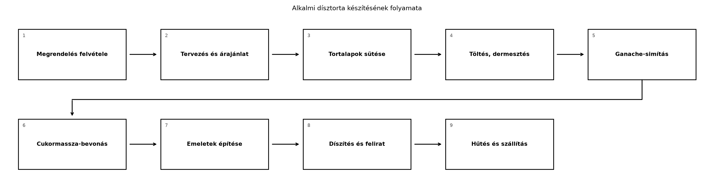
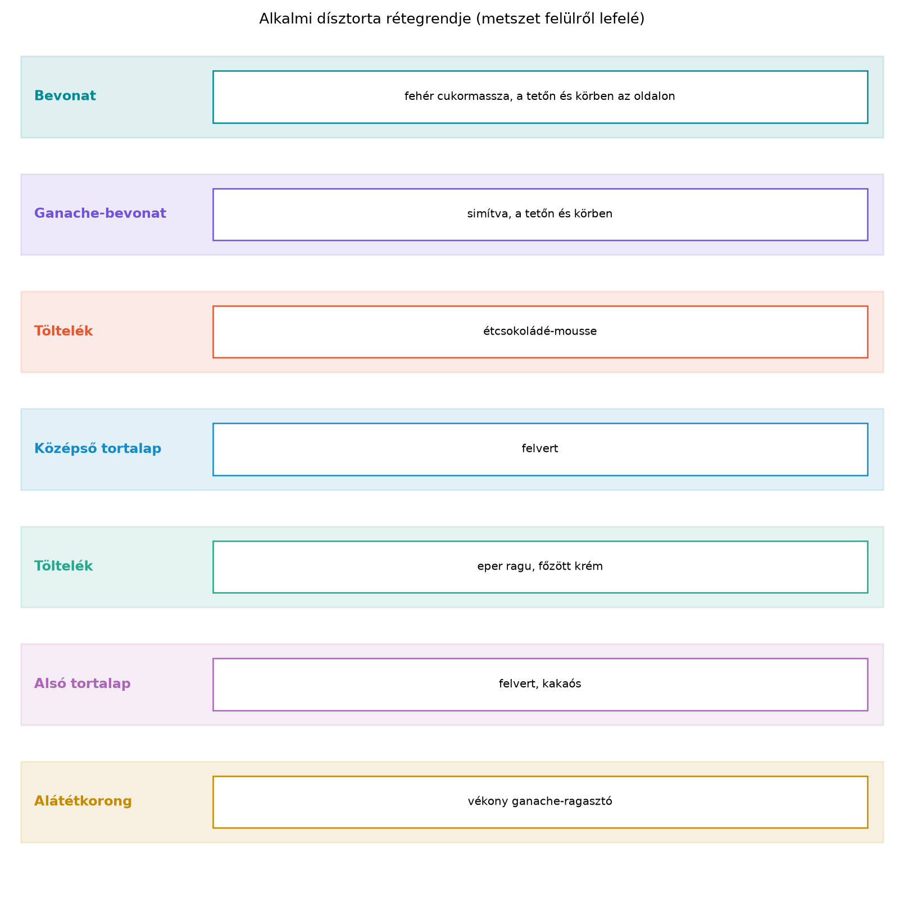

Egy cukrászüzemben gyakran érkezik olyan megrendelés, amely nem a vitrinben lévő, megszokott termékekre vonatkozik. Egy esküvőre háromemeletes tortát kérnek, egy keresztelőre babarózsaszín cukormassza-bevonatos tortát, egy születésnapra pedig olyan dísztortát, amelyre felirat is kerül. Ilyenkor nem elég egy jó receptet ismerni. A cukrásznak meg kell értenie a megrendelő elképzelését, meg kell terveznie a torta szerkezetét, ki kell számolnia az anyagszükségletet, biztonságosan fel kell építenie az emeleteket, és a kész tortát úgy kell eljuttatni a helyszínre, hogy az ne dőljön össze, ne repedjen meg, és ne szennyeződjön.
A hibás tervezés tipikus következménye: a felső emelet belesüpped az alsóba, a cukormassza bevonat megreped a sarkoknál, a torta szállítás közben elcsúszik, vagy a megrendelő allergén miatt nem tudja elfogyasztani. Ezért az alkalmi dísztorta készítése nemcsak díszítési feladat, hanem tervezés, statika, élelmiszerbiztonság és gazdaságosság együttese.
Képzelj el egy háromszintes esküvői tortát. Alul egy 28 cm-es alsó emelet, rajta egy 20 cm-es középső, legfelül egy 14 cm-es felső torta. Minden emelet saját vékony alátétkorongon áll. A többemeletes szerkezet nem egymásra rakott tortalapokból áll, hanem emeletenként külön elkészített, beborított és dermedt tortákból, amelyeket alulról felfelé, támasztó pálcákkal és központi átszúró pálcával szerelnek egymásra. A tervezés során minden méretet sorszámozva, rajzban vagy egyszerű vázlaton rögzítünk.
A következő folyamatábra a dísztorta tervezésének és készítésének teljes útját mutatja:

A folyamatábra minden doboza mögött döntés és ellenőrzés van: megfelelő-e a töltelék állaga, eléggé dermedt-e a ganache, vízszintes-e az emelet, stabil-e a szállítódoboz. Ezt az alábbiakban lépésről lépésre dolgozzuk ki.
Definíció. Alkalmi dísztorta az a többnyire megrendelésre készülő, egyedi méretű, alakú és díszítésű torta, amelyet meghatározott eseményre (esküvő, keresztelő, születésnap, évforduló, céges rendezvény) terveznek, és amelynél a külalak legalább olyan fontos, mint az íz. Jellemzője lehet: több emelet, cukormassza-bevonás, ehető vagy nem ehető figurális dísz, felirat, sablonos minta, egyedi színvilág.
Definíció. Cukormassza vagy fondant bevonómassza olyan, porcukor alapú, rugalmasan nyújtható massza, amelyet a torta felületének simítására és burkolására használunk. A házi és üzemi cukormasszák összetétele eltérhet: jellemzően porcukrot, glükózszirupot, zselatint vagy tragantot, növényi zsiradékot, esetleg glicerint és aromát tartalmaznak (ellenőrizendő: gyártói terméklap). A kész cukormassza nem marcipán, mert nem tartalmaz mandulát.
Szabály. A dísztorta tervezése során a következő adatokat mindig rögzítsük: 1. az alkalom és a helyszín; 2. a tervezett adagszám (hány főre); 3. a kért forma, emeletek száma, színek, felirat, díszek; 4. az allergének és a fogyasztói tájékoztatási igények; 5. a torta elvitelének, szállításának körülményei; 6. a költség- és árvetés.
Jogszabály. Az élelmiszerekre vonatkozó tájékoztatási rendelet (1169/2011/EU) szerint a csomagolatlan, saját előállítású terméknél is biztosítani kell a fogyasztó számára az allergénekre vonatkozó tájékoztatást – akár szóban, akár írásban, a vendéglátó üzlet gyakorlata szerint (ellenőrizendő: a vendéglátásban alkalmazandó jelölési és tájékoztatási módozatok). A nem ehető díszeket és a támasztóelemeket úgy kell kialakítani, hogy ne tegyék kockázatossá az élelmiszert, és a fogyasztó tudja, mi ehető és mi nem.
Higiénia. Minden technológiai útmutató a higiéniai munkakezdéssel indul: munkaruha, hajháló, ékszer le, kézmosás, tiszta felület és eszközök, nyersanyag-ellenőrzés. A dísztortánál ezt különösen komolyan kell venni, mert a torta több napon át készül, és a végső bevonás, díszítés után már nincs hőkezelés.
Biztonsági korlát. A támasztó pálcák vágása, az éles késsel való dolgozás és a nehéz emeletek emelése sérülésveszélyes. A gépi művelet (habverés, dagasztás) tanműhelyi vagy üzemi környezetben, oktatás után és felügyelet mellett végezhető; otthon háztartási géppel, kis adagban gyakorolj.
A megrendelés felvételekor ne csak annyit kérdezzünk: „milyen tortát szeretne?”. A pontos munka érdekében rögzítsük az alkalom, a létszám, az allergén, a költség, a helyszín és a szállítás adatait.
Gyakorlat. Készítsünk egyszerű megrendelőlapot:
| Adat | Példa |
|---|---|
| Megrendelő neve, telefonja | Kovács Anna, +36 … |
| Alkalom | esküvő |
| Dátum, helyszín | 2025. július 26., Borvidék Rendezvényház |
| Létszám | 60 fő |
| Emeletek | 3 szint: 28-20-14 cm |
| Alaptészta | felvert, kakaós felvert |
| Töltelék | főzött sárgakrém + eper, étcsokoládé-mousse |
| Bevonat | ganache + fehér cukormassza |
| Színek, dísz | törtfehér, halvány zöld szalag, ehető virág |
| Felirat | nincs |
| Allergén | glutén, tojás, tej; dió nincs |
| Költségkeret | 45 000 Ft |
| Szállítás | a cukrászda hűtött autója |
A létszámból adódó tortaméretet ne saccoljuk. A gyakorlatban egy-egy adagra 100–140 g kikészített tortát számolunk; esküvői tortánál inkább 100–120 g-ot, mert a vendégek már vacsora után fogyasztják. Három emeletnél az egyes emeletek átmérője nemcsak esztétikai kérdés, hanem a stabilitást is szolgálja: a felső emelet legalább 6–10 cm-rel kisebb átmérőjű legyen, mint az alsó, hogy a lépcsőzet stabil és jól szeletelhető legyen.
Példa. Egy 60 fős esküvői tortához három emeletet tervezünk: 28 cm-es, 20 cm-es és 14 cm-es kerek torta. A becsült kikészített tömegek (9 cm magas emeletek, a tömeg kb. a átmérő négyzetével arányos): 28 cm-es emelet kb. 3 600 g, 20 cm-es kb. 1 800 g, 14 cm-es kb. 900 g, összesen kb. 6 300 g. Ha egy adag 120 g, akkor , tehát 52 adag. Ez 60 főre kevés (8 adag hiányzik); esküvői tortánál 100 g-os adaggal adag, ez már fedezi a létszámot. Ha a megrendelő 120 g-os adagot kér, akkor vagy a legalsó emelet méretét növeljük, vagy kiegészítő tálalási tortát készítünk. A gyakorlati tervezésnél a pontos tömeg számítással, a tésztaszorzóval határozható meg; a fenti értékek tanulási becslések, méréssel ellenőrizendők.
Szabály. Az adagok tervezésekor mindig kérdezzünk rá: a torta desszert lesz-e, vagy főétkezés utáni sütemény; gyermekek is fogyasztják-e; hány szeletet kér a megrendelő.
A többemeletes torta építése statikai tervezés. A felső emelet súlya nem közvetlenül az alsó torta krémes, puha tésztájára nehezedik, hanem támasztó pálcákra, amelyek a súlyt az alsó emelet alátétkorongjára vezetik.
Az ábra metszetén minden emelet saját alátétkorongon áll; a 20 cm-es emelet alatt 4 pálca kb. 14 cm-es körön (90°-onként), a 14 cm-es emelet alatt 3 pálca kb. 9–10 cm-es körön (120°-onként) áll, mindegyik pontosan emeletmagasságú, és a központi pálca mindhárom alátéten átmegy.
Definíció. Támasztó pálcák olyan élelmiszerrel érintkezésre alkalmas, merev műanyag vagy fa rudak, amelyeket az alsó emelet tortájába függőlegesen, egymástól egyenletes távolságra beleszúrnak, a tortalap tetejével azonos magasságig. A pálcák hossza egyezzen meg az adott emelet kikészített magasságával. A központi átszúró pálca a teljes tortán végigmenő, hosszú, hegyes pálca, amely a doboz aljától a felső emelet tetejéig tart, és megakadályozza az emeletek elcsúszását.
Szabály. Az élelmiszerrel érintkező anyagoknak meg kell felelniük az 1935/2004/EK keretrendeletnek (ellenőrizendő: élelmiszerrel érintkező anyagok magyar és uniós előírásai). A műanyag pálcáknál legyen jelzés: „élelmiszerrel érintkezésre alkalmas”. Fa pálcát csak bevizsgált, tiszta, szilánkmentes forrásból válasszunk.
A pálcák kiosztása: - 28 cm-es alsó emelet egy 20 cm-es emeletet tart: legalább 4 támasztó pálca, kb. 14 cm átmérőjű körön (a felső alátétkorong pereme alatt, belül); - 20 cm-es emelet egy 14 cm-es emeletet tart: legalább 3 pálca, kb. 9–10 cm átmérőjű körön; - a központi pálca minden alátétkorongon átmenjen, így az emeletek nem csúszhatnak el egymáson.
Számítás. A pálca hossza: ahol a kikészített emelet magassága mm-ben vagy cm-ben. Ha az alsó emelet 9 cm magas, akkor a pálcákat 9 cm-esre vágjuk. A pálcát a tortán belül nem érheti a teteje fölé, mert akkor átnyomja a felső emeletet; ha rövid, a felső emelet belesüpped.
Példa. Egy 28 cm-es torta emeletmagassága 8,5 cm. A rákerülő 20 cm-es torta súlya kikészítve 1 800 g. Az alsó torta szerkezete felvert tészta és mousse, ezért nem elég a tészta saját tartása. Négy pálcát szúrunk egy kb. 14 cm átmérőjű körön, egymástól 90°-ra. A pálcákat a tortába nyomjuk ütközésig, majd a felső alátétkorongot a pálcák tetejére helyezzük.
Minden emelet saját vékony, élelmiszerrel érintkezésre alkalmas alátétkorongot kap. A korong átmérője az adott emeletnél lehet kissé kisebb, hogy a bevonat után ne látszódjon. A felső emelet alátétje alá kerülő pálcák pontosan vízszintes magasságot kell adjanak.
Gyakorlat. Az alátétre vékony, tapadást segítő réteget kenünk: kevés ganache vagy cukormassza-ragasztó. Ez megakadályozza, hogy a torta elcsússzon az alátéten. Az emeleteket mindig vízszintes, éles élű tortakorongokból állítsuk össze. A sütés után levágjuk a púpos tetejét, és a megtöltött tortát hűtve, teher alatt vagy anélkül, egyenesre dermesztjük.
Továbbvitt eredmény. A dísztorta szerkezeti terve a vizsgaremek szakrajzának alapja lesz: a Sütemény- és dísztortarajzok alfejezetben a méretezett vázlatot, a rétegrendet és a feliratot együtt dokumentáljuk.
Az alkalmi dísztortánál a rétegek tervezése egyszerre befolyásolja az ízt, a vágási képet és a stabilitást.
Javasolt rétegrend egy 28 cm-es emelethez:

A rétegrend fontos szabálya: a két tortalap közötti töltelék ne legyen vastagabb, mint a tortalap maga, különben vágáskor a szelet szétcsúszik. A gyakorlatban 1,5–2 cm-es tortalapokhoz 0,8–1,5 cm-es töltelékréteget tervezünk. A bevonás előtt az egész tortát ganache-réteggel simítjuk, ez adja a cukormassza tapadó, tükörsima alapját és az éles éleket.
A cukormassza alá készült áthúzó ganache szerepe nem csak ízesítés. A ganache megdermedve kemény, sima, zsíros bevonatot ad, amelyre a cukormassza nem ázik át, nem olvad be, és az élek szép élesek maradnak.
Technológiai lap. Ganache-alap és cukormassza-bevonás 28 cm-es, 9 cm magas tortára.
| Nyersanyag | Mennyiség (g) | Megjegyzés |
|---|---|---|
| Étcsokoládé (min. 50 % kakaó) | 500 | finomra vágva |
| Tejszín (min. 30 % zsír) | 300 | forrázáshoz |
| Vaj | 40 | szobahőmérsékleten |
| Cukormassza | 900–1000 | fehér, festve |
| Porcukor | 150 | nyújtáshoz |
| Összesen | kb. 1 890 | veszteséggel |
Eszközök: hőmérő, keverőtál, hablapát, hűtő, tortaforgató, kenőkés, hosszú simítólap, sodrófa, éles kés, vágókés, simítókés.
Műveleti sorrend:
Kritikus pontok:
Allergének: glutén (tortalap), tej (tejszín, vaj), tojás (felvert tészta). A cukormassza gyártói összetétele szerint előfordulhat szója vagy más nyomokban; ellenőrizzük a termék adatlapját (ellenőrizendő: gyártói allergén-információ).
Minőségi jellemzők: sima, gyűrődésmentes felület, egyenletes 3–4 mm-es burkolat, éles élek, nincs repedés a torta felső peremén.
Tárolás: hűtött tárolás 4–8 °C-on, cukormassza-bevonattal a felületet pára ellen védve. A bevont tortát a díszítésig légmentesen vagy fóliával takarva tartsuk.
Figyelem. A ganache-vajas krémes terméknél a hűtési lánc megszakítása tiltott. A tejszínes és tojásos töltelékű tortát hűtés nélkül szobahőmérsékleten tartani veszélyes. A tárolási hőfokot a HACCP-terv szerint dokumentáljuk (ellenőrizendő: a vállalkozás HACCP-előírásainak kritikus határértékei).
Az éles él a professzionális dísztorta jellegzetessége. Két módszer terjedt el: 1. Fordított bevonás: a tortát fejjel lefelé, egy kartonkorongon bevonni, az alját simára vágni, és így az alsó, vágott él válik a felső éllé. 2. Élmassza módszer: a ganache-ból a torta peremére párhuzamosan masszacsíkot húzni, majd a külső és belső simítókártyával két irányból élesre húzni.
A vizsgán és a gyakorlatban a második módszer egyszerűbb, ha a ganache megfelelő hőfokú.
Hiba. A cukormassza a torta élénél megreped, mert a ganache túl vékony, vagy a masszát túl vékonyra nyújtottuk. Megelőzés: az élre legalább 4–5 mm masszát hagyjunk, és ne feszítsük túl a masszát az élnél.
Hiba. A massza alá levegő szorul, és felhólyagosodik. Ok: a nyújtás után a tortára fektetett masszát nem simítottuk fokozatosan, vagy a torta felülete nem volt sima. Javítás: a hólyagot steril tűvel szúrjuk át, és a levegőt finoman nyomjuk ki; a helyet simítsuk el.
Esküvői torta. A háromemeletes esküvői torta klasszikus felépítése: - alsó emelet: a legnagyobb, legnagyobb adagszámot adja, jellemzően világos felvert tészta és könnyű gyümölcsös töltelék; - középső emelet: kakaós tészta, csokoládés vagy mogyorós töltelék; - felső emelet: kisebb, díszesebb, a menyasszony és a vőlegény tortája, amelyet egyes hagyományok szerint félretesznek.
Gyermektorta. Gyermekeknek szánt tortához ne használjunk alkoholt, koffeint, nyers tojást, kemény kis díszeket, amelyek fulladásveszélyt okozhatnak, és figyeljünk a gyakori gyermekallergénre, a földimogyoróra. Az élénk színeket lehetőleg természetes színezékkel érjük el, vagy mérsékelt mennyiségű engedélyezett adalékanyaggal.
Felirat. A felirat készülhet: - cukormasszából kivágott betűkből, - írómasszából (porcukor és pasztőrözött tojásfehérje vagy tojásfehérje-por, citromlé; nyers tojásfehérje nem használható – lásd a Különleges díszítés: csokoládé-, marcipán-, karamell-, zselatinmassza- és grillázsdíszek alfejezet glazúrjánál), - csokoládéból írva, - ehető tintával és ehető papírra nyomtatva.
Mindig az ehető írómasszát válasszuk, vagy a nem ehető matricát jelöljük. A feliratot a bevont, dermedt torta felületére helyezzük; a hibás betűt nedves ecsettel vagy kis késsel javítsuk.
Gyakorlat. A felirat elhelyezéséhez először szakrajz kell: a torta felülnézeti körén jelöljük a szöveg pontos helyét, betűmagasságát és színét. Ez a rajz a későbbi vizsgaremek szakrajzához használható.
Technológiai lap. Többemeletes esküvői torta összeállítása.
Termék: háromemeletes esküvői torta (28-20-14 cm), kikészítve kb. 6 300 g: 120 g-os adaggal kb. 52, 100 g-os adaggal kb. 63 adag.
Anyaghányad (egyes emeletekhez külön számolva, összesítve):
| Nyersanyag | Mennyiség (g) | Megjegyzés |
|---|---|---|
| Felvert tortalap | 2 000 | sütés után levágva |
| Kakaós felvert tortalap | 1 200 | középső emelet |
| Főzött sárgakrém | 1 000 | hűtve kenve |
| Eper-ragu | 600 | sűrűre főzve |
| Étcsokoládé-mousse | 800 | dermed |
| Ganache a simításhoz | 1 200 | három emeletre |
| Cukormassza | 2 800 | színezve, nyújtva |
| Támasztó pálca | 8 db | élelmiszerrel érintkezésre alkalmas |
| Alátétkorong | 3 db | 28, 20, 14 cm |
| Központi pálca | 1 db | hosszú, hegyes |
| Összesen | kb. 9 600 | nyersanyag; a levágott lapszélek és a nyújtási hulladék levonása után a kikészített tömeg kb. 6 300 g (tanulási becslés, méréssel ellenőrizendő) |
Eszközök: éles kés, kenőkés, csillagcső, habfúvó (opcionális), tortaforgató, vízszintmérő, mérleg, hűtő, vágódeszka.
Műveleti sorrend:
Kritikus pontok:
Allergének: glutén, tojás, tej; a díszeknél a gyártói allergéninformációt figyelembe kell venni.
Minőségi jellemzők: függőleges tengely, vízszintes emeletek, hézagmentes illesztések, a bevonat sérülésmentes, a torta a dobozba csomagolva stabil.
Tárolás, szállítás: hűtött tárolás 4–8 °C-on; szállításhoz a tortát hűtött, csúszásmentes dobozban, vízszintesen helyezzük el.
Figyelem. Éles kés, pálcavágás, nehéz emelet emelése: a vágás irányától elfelé dolgozzunk, a pálcát stabil alátámasztás mellett vágjuk, a 10 kg-ot meghaladó tortát két ember emelje.
A kész tortát a legnagyobb kockázat a szállítás során éri. A dísztortát mindig hűtött állapotban, merev, csúszásmentes dobozban szállítsuk. A doboz aljára csúszásgátló lapot helyezünk, a tortát pedig a doboz méretéhez igazítjuk. Ha az autó nem hűtött, a szállítási idő és a külső hőmérséklet szerint hűtőtáskát, hűtőakkuval ellátott dobozt vagy termos szállítót válasszunk.
A helyszíni összeszerelésnél a következő sorrendet tartsuk: 1. a hűtött tortát csak az utolsó pillanatban vegyük ki a dobozból; 2. az emeletek külön szállítva biztonságosabbak, mint összeszerelve; 3. a helyszínen a pálcákat, a központi szúrást a kiszolgáló asztalon, tiszta felületen végezzük; 4. a nem ehető díszeket, gyertyákat csak a végső tálalás előtt tegyük a tortára, és a fogyasztónak jelezzük.
Szabály. A hűtött, tejszínes, tojásos töltelékű dísztorta szobahőmérsékleten való tartása korlátozott; a pontos idő és hőfok a HACCP-tervben és a hatósági útmutatóban van (ellenőrizendő: hatályos NÉBIH-útmutató). A Tilos. gyakorlat a hűtési lánc megszakítása, a torta kint felejtése, a kiolvadt fagylalt visszafagyasztása, a lejárt vagy romlott nyersanyag „megmentése”.
A dísztorta receptúráját az alapmennyiségre, majd emeletekre bontva számoljuk. Az egyes emeletek átmérője szerint a felületük és tömegük eltérő, ezért a szorzószámot külön-külön számítjuk.
Szabály. A kerek torta területe: A tömeg becslése: ahol a felületre eső kikészített tömeg, például (ellenőrizendő: a tényleges receptúra tömegét méréssel határozzuk meg).
Számítás. 28 cm-es torta területe: Ha , akkor: Ez az érték az alap tortalap tömegére vonatkozik; a kikészített, töltött, bevont torta tömege ennél nagyobb, mert a krém és a massza is növeli. Ezért a gyakorlatban az egész kikészített tortát megmérjük, és abból számolunk adagot.
Számítás. Ha a 28 cm-es kikészített emelet tömege 3 600 g, és egy adag 120 g, akkor az adagszám: Három emeletre: 30 + 15 + 7,5 ≈ 52 adag (a 20 cm-es emelet 1 800 g, a 14 cm-es 900 g), ahogy a korábbi példában láttuk.
A dísztorta árának kialakításához a termékkalkuláció elvét alkalmazzuk. A nyersanyagköltséget az anyaghányad és a veszteség szerint számoljuk, majd az árat a haszonkulcs vagy a fedezeti pont alapján alakítjuk ki.
Példa. A háromemeletes torta nettó anyagköltsége 18 000 Ft. A munkaidő 6 óra (ezt a haszonkulcs fedezi), a díszítés további 3 óra többletmunka, a csomagolás 2 000 Ft, a szállítás 1 500 Ft. Az üzem haszonkulcsa 60%, a díszítési többletmunka tanulási órabére 3 000 Ft/óra (tanulási példa, ellenőrizendő: üzemi kalkuláció). Egy módszert következetesen alkalmazunk: a haszonkulcsos eladási ár a rezsit, a szokásos munkát és a nyereséget tartalmazza, a külön tételek (többletmunka, csomagolás, szállítás) ehhez adódnak.
Díszítési többletmunka: . Nettó ajánlati ár: . Bruttó ajánlati ár 27% ÁFA-val (tanulási példa): .
Az elvitelre vagy kiszállítva értékesített cukrászati termék ÁFA-kulcsa eltérhet a helyben fogyasztott vendéglátásétól (ellenőrizendő: hatályos ÁFA-törvény és az értékesítés módja). A vevő számára a teljes (bruttó) árat tüntessük fel. Ha az ajánlat meghaladja a megrendelő költségkeretét, a cukrász egyszerűbb díszítést vagy kisebb tortát javasol.
Eset. A cukrászda megrendelést kap egy 50 fős születésnapi tortára. A megrendelő kéri, hogy a torta emeletes legyen, fehér cukormassza-bevonattal, kék felirattal, és hogy az egyik vendég diófélékre (dióra) allergiás. A cukrász a megrendelővel tisztázza, pontosan mely diófélékre érzékeny a vendég, és a megrendelőlapon rögzíti. A receptúrából minden diófélét elhagy (diós töltelék, mogyorós bonbon helyett eper-ragut használ), külön, tisztított eszközökkel dolgozik, és tájékoztatja a megrendelőt, hogy az üzemben diófélék is előfordulnak (keresztszennyeződés kockázata). A torta méretét az adagszám szerint 28-18 cm-es két emeletben állapítja meg: kikészített tömegük kb. 3 600 + 1 500 = 5 100 g, ami 100 g-os szeletekkel 51 adag, vagyis az 50 főre elég (120 g-os adagnál csak 42 adag lenne, ezért a cukrász 100 g-os szeletet tervez). A pálcákat 8,5 cm hosszúra vágja az alsó emelet magassága szerint. A szállításhoz a tortát hűtött autóba teszi, a dobozba csúszásgátló lapot helyez. A helyszínen a helyi kapcsolattartóval egyeztet, hogy a torta az utolsó pillanatig hűtött maradjon, és a fogyasztók számára ki legyen írva: „glutént, tojást és tejet tartalmaz; nyomokban diófélét tartalmazhat” (a keresztszennyeződésre vonatkozó jelölés az üzemi eljárástól függ, ellenőrizendő).
Tanulság. A pontos megrendelésfelvétel, az allergének rögzítése, a statikai méretezés és a hűtési lánc tervezése együtt tették sikeressé a tortát. A hibalehetőségeket az előkészítésben, nem a díszítés közben szűrtük meg.
1. feladat (A) Sorold fel a többemeletes torta építéséhez szükséges támasztó- és rögzítő elemeket, és nevezd meg az élelmiszerrel érintkező anyagokra vonatkozó uniós keretrendeletet.
2. feladat (A) Egy 28 cm-es kész torta tömege 2 300 g. Hány adagot ad, ha egy adag 110 g?
3. feladat (B) Egy esküvői tortához 60 főre három emeletet tervezünk: 28-20-14 cm. A 28 cm-es torta kikészített tömege 3 600 g, a 20 cm-esé 1 800 g, a 14 cm-esé 900 g. Hány adagot adnak együtt, ha egy adag 120 g? Ha a rendelés 60 fő, elegendő-e? Számítsd ki, hány adag hiányzik, és javasolj megoldást.
4. feladat (B) Egy 28 cm-es emelet magassága 9 cm. A pálcákat milyen hosszúra vágod? Miért? Hány pálcát teszel a 20 cm-es emelet alá, és milyen elrendezésben?
5. feladat (C) Egy megrendelő gyermektortát kér a 3 éves gyermeke születésnapjára. A tervezett díszítés: csokoládé figurák, alkoholos puncs a piskótához, egész diószemek a tetején. Milyen kockázatokat azonosítasz? Hogyan módosítanád a tervet?
6. feladat (D) Készítsd el otthon egy 18 cm-es torta cukormassza-bevonatát a Gyakorlati útmutató szerint. Töltsd ki a technológiai lapot: a termék megnevezése, az alapmennyiség, az anyaghányad, a műveleti sorrend, a kritikus pontok, az allergének és a minőségi jellemzők.
Önellenőrzés – válaszok
1. feladat (A) Támasztó pálcák, alátétkorongok, központi átszúró pálca. Az élelmiszerrel érintkező anyagok keretrendelete: 1935/2004/EK (ellenőrizendő: a hatályos szöveg és a nemzeti átültetés).
2. feladat (A) Adagszám = 2300 / 110 = 20,9, azaz 20 teljes adag, a maradék 100 g.
3. feladat (B) Összes tömeg: 3600 + 1800 + 900 = 6300 g. Adagok: 6300 / 120 = 52,5, azaz 52 adag. A 60 főre ez kevés, 8 adag hiányzik. Javaslat: esküvői tortánál 100 g-os adagot számolni (6300 / 100 = 63 adag, elegendő), vagy kiegészítő, kb. 8–10 adagos tálalási tortát készíteni, vagy az alsó emelet átmérőjét kissé növelni.
4. feladat (B) A pálcákat 9 cm hosszúra vágjuk. A 20 cm-es emelet alá 4 pálcát teszünk, kb. 14 cm átmérőjű körön, 90°-onként. A pálcákat pontosan az alsó emelet magasságáig nyomjuk, és a felső alátétet rájuk helyezzük.
5. feladat (C) Kockázatok: az egész dió fulladásveszélyt okozhat kisgyermeknél; az alkohol gyermeknek nem való; a csokoládéfigura lehet kemény, és a gyermek lenyelhet egy darabot, ha leesik. Módosítás: dió nem kerül a tetejére, legfeljebb őrölt dió a töltelékbe, allergénnel jelölve; az alkoholt elhagyjuk; a csokoládéfigurákat vékonyra készítjük, vagy ehető cukornyomaton megjeleníteni a motívumot. A szülőt tájékoztatjuk az allergénekről.
6. feladat (D) A feladat értékelése szempontok szerint: a technológiai lap hiánytalan kitöltése, a receptúra arányai, a sorrend betartása, a kritikus pontok megnevezése, az allergének pontos listája, a bevonat minősége (sima, repedésmentes, éles élek). A várt eredmény: egy 18 cm-es, egyenletesen bevont torta, a massza kb. 3–4 mm vastag, sérülésmentes.
Az alkalmi dísztorta készítése a megrendelés felvételével kezdődik: rögzíteni kell az alkalmat, a létszámot, az allergéneket, a kért formát, a költségkeretet és a szállítás körülményeit. A méretezést adagszámból számoljuk: egy adagra 100–140 g kikészített tortát tervezünk. A többemeletes torta statikája az emeletek külön alátétkorongjára, a támasztó pálcákra és a központi átszúró pálcára épül. A pálcákat az alsó emelet magasságával azonos hosszra vágjuk, és az élelmiszerrel érintkezésre alkalmas anyagból választjuk. A tortát bevonás előtt ganache-sal simítjuk, lehűtjük, majd cukormasszával burkoljuk; a masszát nem liszttel, hanem porcukorral nyújtjuk. Az élek élesítése, a levegőbuborékok kezelése és a hűtött tárolás a minőség és biztonság feltétele. A szállítást hűtött, merev dobozban, csúszásgátlóval végezzük. A tejszínes és tojásos töltelékeknél a hűtési lánc megszakítása tilos. A dísztorta tervezésének folyamata – méretrajz, rétegrend, felirat, statika – a későbbi szakrajz, vizsgaremek alapdokumentuma. Továbbvitt eredmény. A dísztorta méretezett rajza, rétegrendje és szerelési terve a Sütemény- és dísztortarajzok alfejezetben a vizsgaremek szakrajzának alapja.
A fejezet a magyar és az uniós élelmiszerjogi keretekre támaszkodik: 1169/2011/EU (fogyasztói tájékoztatás, allergének), 1935/2004/EK (élelmiszerrel érintkező anyagok), 178/2002/EK (nyomon követhetőség), 852/2004/EK (higiénia). A konkrét hőfokokat, tárolási időket és a vendéglátási ÁFA-kulcsot az aktuális NÉBIH-útmutató, a hatályos jogszabály és a gyártói adatlap szerint ellenőrizni kell. A cukormassza összetétele, allergénjei és nyújtási tulajdonságai a felhasznált gyártó terméklapjától függnek. A felhasznált tápérték- és költségadatok tanulási példaként szerepelnek.